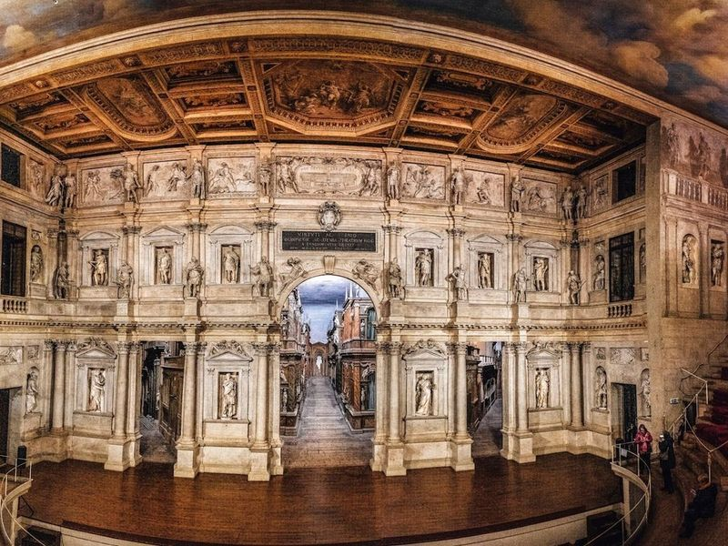
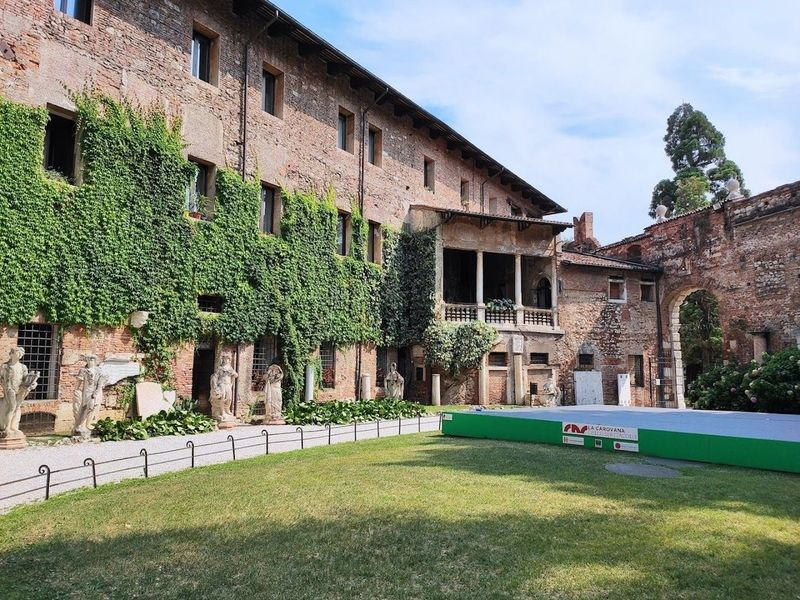
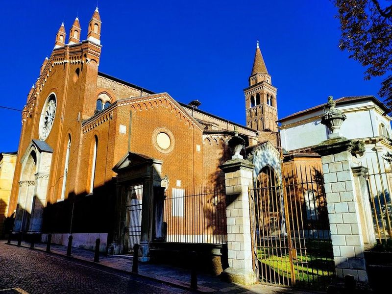
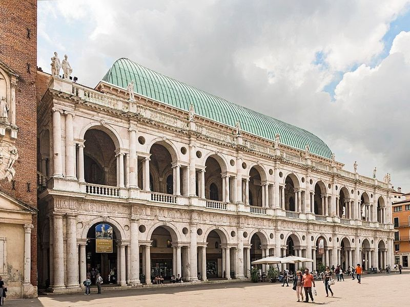
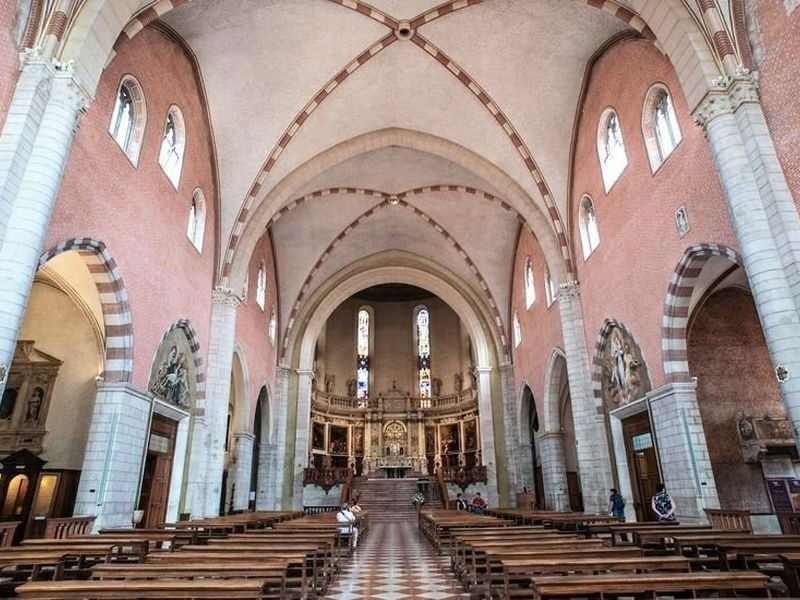
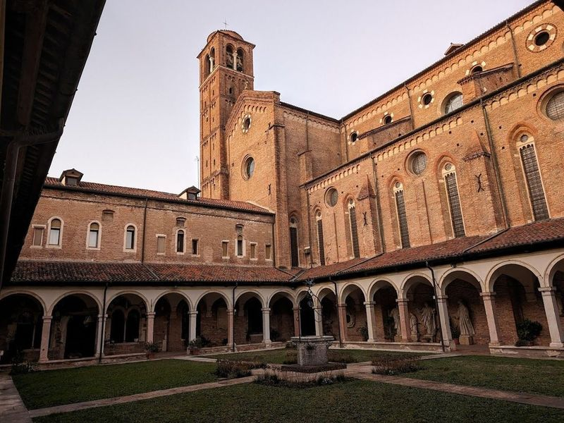
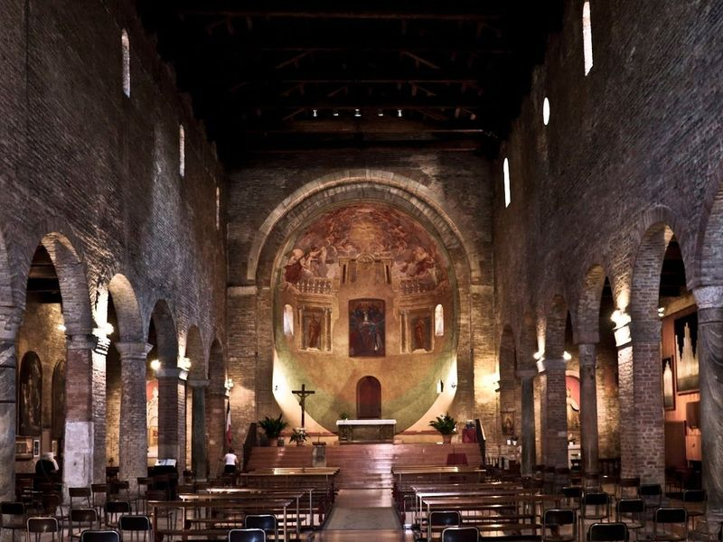
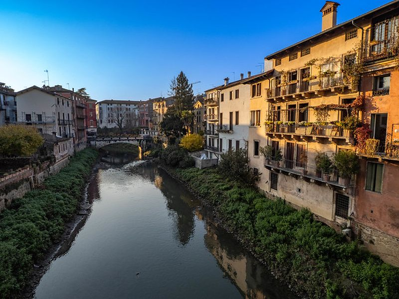
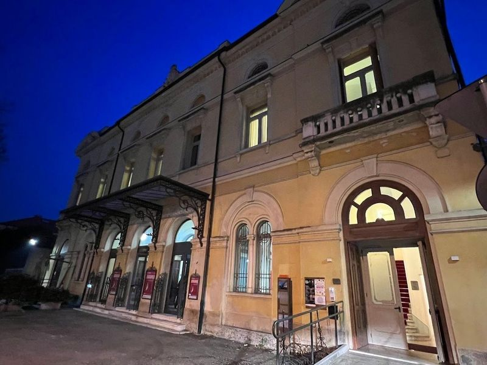
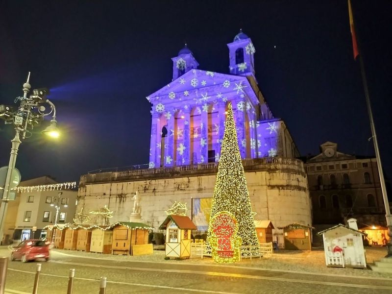

Explore Vicenza
A Brief History
Vicenza flourished under the Venetian Republic as a country seat for landowners who hired Andrea Palladio to redesign palaces, villas, and the Basilica loggias in the sixteenth century. Roman roads and medieval guild halls preceded that classical revival, which spread Palladian proportions across Europe and North America. The Teatro Olimpico, completed in 1585, anchors a centre where stone arcades, silk workshops, and later manufacturing linked the Veneto plain to Alpine timber routes.
Attractions Map
Top Sights & Activities

Olympic Theater
The Olympic Theater, also known as Teatro Olimpico, is a historic landmark in Vicenza, Europe's first covered theater built in the 16th century. Commissioned by the Olympic Academy, it was designed to host performances and intellectual debates. The theater consists of three rooms with impressive frescoes dating back to 1647 and original oil lamps from 1585 on display.

Palazzo Chiericati
Palazzo Chiericati is a 16th-century Palladian building that houses a museum of art and sculpture spanning from the 13th to the 20th centuries. Designed by Palladio, it features an imposing facade and is considered one of his works. The Civic Art Gallery inside showcases original collections of Venetian works of art, including pieces by Tintoretto, Veronese, Sansovino, and others.

Chiesa di Santa Corona
In the heart of Vicenza's historic old town stands the Chiesa di Santa Corona, a 13th-century Gothic church known for housing a precious relic - a thorn from Christ's Crown of Thorns. The interior boasts remarkable paintings such as Giovanni Bellini's Baptism of Christ and Veronese's Adoration of the Magi. One of its main attractions is the Cappella Valmarana, believed to be designed by renowned architect Andrea Palladio.

Palladian Basilica
The Palladian Basilica, a 16th-century masterpiece designed by the renowned architect Palladio, is a cultural hub in Vicenza. The building underwent renovations in 2012 and is surrounded by grand aristocratic palaces like Loggia del Capitaniato and Palazzo Chiericati. travellers can explore the nearby Casa Pigafetta and the Rotonda villa, both designed by Palladio.

Cathedral Santa Maria Annunciata
The Cattedrale di Santa Maria Annunciata is a Roman Catholic place of worship located in Vicenza, built during the late 15th century and completed a century later. It features an original Gothic facade made of brick, enveloped by white and red marble that underwent extensive renovations after being damaged during World War II. The cupola was designed by Andrea Palladio, while inside the building find a 14th-century triptych created by Lorenzo Veneziano.

Church of San Lorenzo
The Catholic Church of San Lorenzo is a large and impressive brick building with an ornate entrance. The inside is filled with tombs, a 1500 fresco by Bartolomeo Montagna depicting the Beheading of St. Paul, and other impressive statues. It is more impressive than the Cathedral, making it worth visiting if only have time in Vicenza.

Basilica of Saints Felice and Fortunato
The Basilica of Saints Felice and Fortunato stands as a testament to the rich history of Vicenza, being one of its oldest churches. This sacred space is adorned with mosaics from the 4th and 5th centuries, alongside ancient sarcophagi that echo tales from the Roman Empire. Each wall and pillar tells a story, reflecting centuries of religious evolution. travellers often find solace in its serene atmosphere, making it an public space for quiet reflection or prayer.

Retrone
The site is catalogued as a tourist attraction. The site is catalogued as a tourist attraction. The site is catalogued as a tourist attraction. Retrone is listed among principal sites for Vicenza within Italy. Municipal and regional heritage listings document its place in the historic centre and travellers routes through Vicenza.

Teatro civico
in the heart of Schio, the Teatro Civico stands as a testament to the town's rich cultural heritage and economic vitality that blossomed in the early 20th century. This venue, adorned with Art Nouveau architecture, has become a beloved gathering place for locals and travellers alike. The theater boasts exceptional acoustics and an intimate atmosphere that enhances every performance.

Duomo di San Pietro Apostolo
Duomo di San Pietro Apostolo is a significant religious site in Schio, featuring a blend of Romanesque and Gothic architectural styles. The bell tower showcases fifteenth-century embellishments, while the interior boasts classical columns supporting five aisles. Notably, the Chapel of the Coronation stands out within. Positioned atop Gorzone hill, this cathedral offers a panoramic view of Alessandro Rossi Square and exudes an imposing presence even when viewed at night.